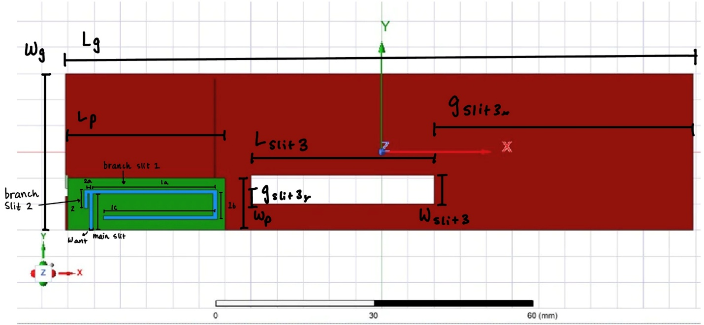
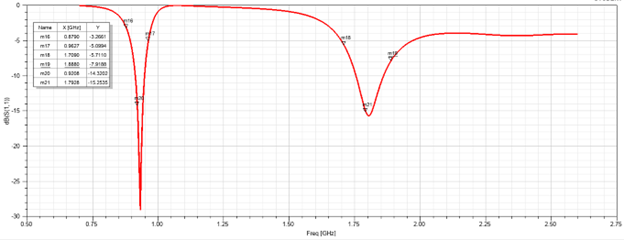
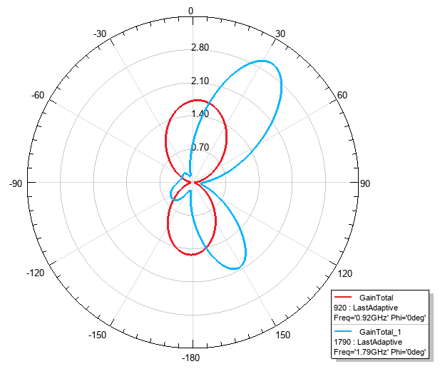
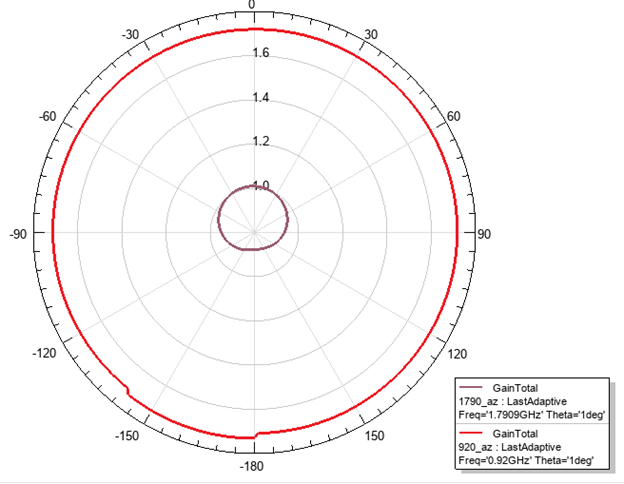

Compact Dual-Band PIFA for LTE Bands 3 and 8
Designed a meandered, folded planar inverted-F antenna covering LTE Band 8 (880-960 MHz) and LTE Band 3 (1.71-1.88 GHz) within a 35×10×5 mm volume on a 120×60 mm ground plane. A shorted parasitic strip recovers the LTE-3 bandwidth lost to the compact footprint. The design is benchmarked against the Chu–McLean Q bound (ka ≈ 0.35) to characterize the size–bandwidth tradeoff.
Trimetric HFSS geometry — folded PIFA with ground plane

Top-view layout — meandered radiator with parasitic strip

Simulated |S₁₁| — dual-band match at LTE 8 and LTE 3

Elevation radiation pattern — E-plane cut

Azimuth radiation pattern — H-plane cut